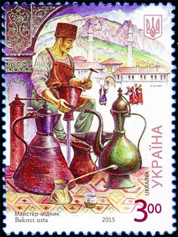
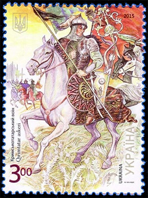
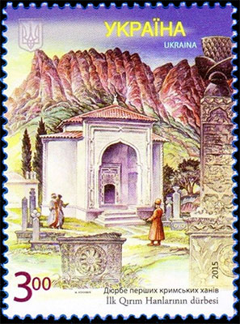
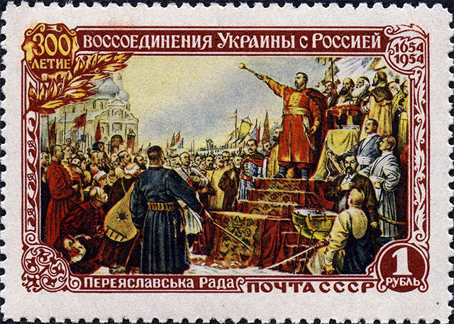
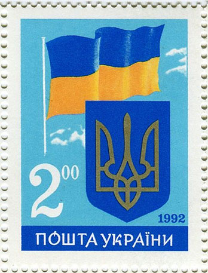
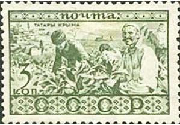
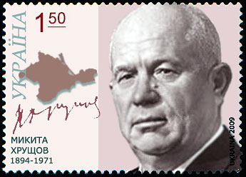

REUNIFICĂRI ŞI SEPARĂRI
TĂTARII DIN CRIMEEA
Victor Manta, PWO
Tătarii din Crimeea sunt un grup etnic de origine turcă, care s-a format în Peninsula Crimeea în secolele 13 - 17, în primul rând din triburile turcice, care au migrat din stepele asiatice începând din secolul al 10-lea, cu contribuții ale populațiilor pre-cumane deja existente în Crimeea.

Tătarii din Crimeea au constituit majoritatea populației Crimeii din timpurile etnogenezei sale şi până la mijlocul secolului al 19-lea, şi cea mai mare populație etnică relativă până la sfârșitul secolului al 19-lea.


Peninsula Crimeea, de asemenea cunoscută ca Crimeea, este o întindere largă de teren de pe coasta de nord a Mării Negre, care este aproape complet înconjurată de Marea Neagră şi de mai mica Mare Azov la nord-est. În anul 1783 Crimeea a fost anexată de Imperiul Rus.

Deasupra este reprodusă una dintre cele mai frumoase mărci ale perioadei, care a fost emisă de către URSS în 1954. Timbrul comemorează "300 de ani de la reunificarea Ucrainei cu Rusia", ca urmare a Tratatului de la Pereiaslav din 1654. Această interpretare este puternic contestată de mulţi istorici moderni.

Ucraina s-a declarat în mod oficial un stat independent pe 24 august 1991, când comunistul Soviet Suprem (parlament) al Ucrainei a stipulat că Ucraina nu va mai aplica legile URSS, ci numai legile RSS Ucrainene, declarând astfel independența de facto a Ucrainei faţă de Uniunea Sovietica. Marca de mai sus, emisă în 1992, afișează drapelul şi stema statului ucrainean independent.
Să revenim la tătarii din Crimeea. În urma puciului bolșevic din 1917, Crimeea a devenit un teritoriu în cadrul Republicii Sovietice Socialiste Federative Ruse, partea centrală a URSS. Această ţară a emis în 1930 o marcă poştală care arată nişte tătarii din Crimeea la muncile câmpului.

În anul 1954 Regiunea Crimeea a fost transferată către Republica Sovietică Socialistă Ucraineană, la imboldul unui etnic ucrainean, Nikita Hrușciov, pe atunci secretar general al Partidului Comunist al Uniunii Sovietice şi unul dintre conducătorii cei mai iresponsabili ai acestei ţări. Transferul a fost descris de către unii membri din Sovietul Suprem ca un cadou făcut Ucrainei în cadrul comemorării celor 300 de ani scurşi de la Tratatului de la Pereiaslav.
Pentru această ispravă a lui Hruşciov noul stat ucrainean a avut nefericita idee de a-l comemora pe acesta în 2009, prin emiterea unei mărci poştale.

Preşedintele ucrainean de atunci, fiind în dezacord cu cerinţele participanţilor la o revoltă sprijinită pe larg de populaţie, a fugit în februarie 2014 din Ucraina în Rusia. În martie 2014 în zone de Est ale ţării puterea a fost acaparată ulterior de către separatiști pro-ruşi şi forțşe speciale ruseşti. A urmat un referendum neautorizat de autorităţile centrale de la Kiev asupra chestiunii "reunificării cu Rusia", care a avut ca rezultat că o mare majoritate a votat în sprijinul propunerii. Federaţia Rusă a anexat apoi în mod declarat Crimeea, pe care o administrează în prezent. Ucraina, susținută de cea mai mare parte a comunității internaționale, refuză să accepte anexarea şi continuă să îşi afirme dreptul ei asupra peninsulei ocupate. Sursa
Federaţția Rusă şi preşedintele ei actual Putin folosesc diverse mijloace propagandistice pentru a acoperi politica lor expansionistă. A se vedea mai jos ca exemplu o marcă emisă de Rusia în 2014,
precum şi medalia emisă de ministerul rus al apărării, care a fost acordată, aşa cum scrie pe ea, "Pentru întoarcerea Crimeii".
Trecutul tragic şi amintirea acestuia
Aproape imediat după eliberarea Crimeii de invadatorul german, in mai 1944, Comitetul de Stat de Apărare al URSS a ordonat expulzarea întregii populaţii tătare din Crimeea, inclusiv a familiilor tătarilor înrolaţi în armata sovietică. Ele au fost transportate în trenuri şi vagoane de marfă spre Asia centrală, în primul rând Uzbekistan. Începând cu anul 1967 unora dintre supravieţuitori li s-a permis să se întoarcă în Crimeea. În 1989 (deci cu puţin înainte de destrămarea ţării) Parlamentul URSS a condamnat expulzarea tătarilor din Crimeea din patria lor ca fiind inumană şi ilegală. Astăzi, tătarii din Crimeea constituie aproximativ 12% din populația peninsulei. Sursa
Acest articol a fost inspirată de cântăreaţa ucraineană Jamala, care a câştigat concursul Eurovision 2016 cu cântecul ei intitulat "1944". Cântecul a fost inspirat de amintirile străbunicii ei, care a fost expulzată din Crimeea, împreună cu cei cinci copii ai ei, în 1944, odată cu alţi 240.000 de tătari. Puteţi viziona interpretarea lui Jamala aici.Acest articol a apărut recent, în limba engleză, pe site-ul „Communism on Postal Stamps” al autorului versiunii prezente, în limba română. Puteţi accesa pagina apăsând aici.


Published: July 28, 2016. Revised: July 28, 2016. |